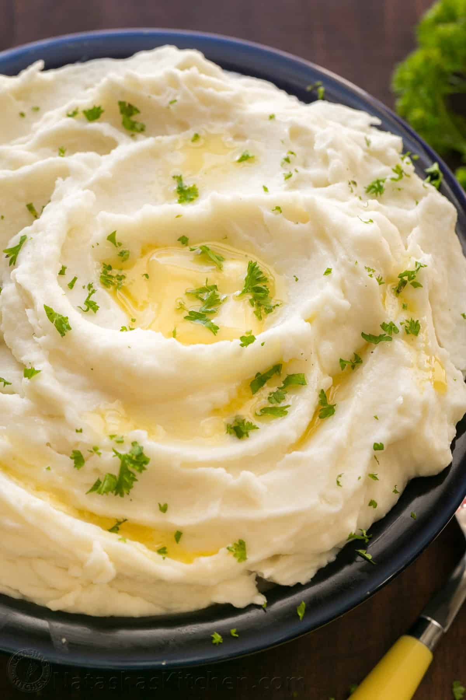

Mashed Potatoes

Description
The best creamy, buttery, homemade mashed potatoes!
Ingredients
- Baking potatoes
- Butter
- Milk
- Salt
- Pepper
Steps
- Boil potatoes until tender but still firm
- In a small saucepan, heat butter and milk on low heat until butter is melted
- Slowly blend milk mixture into potatoes until smooth and creamy
- Season with salt and pepper to taste